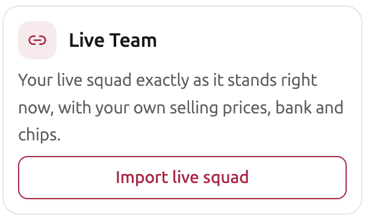
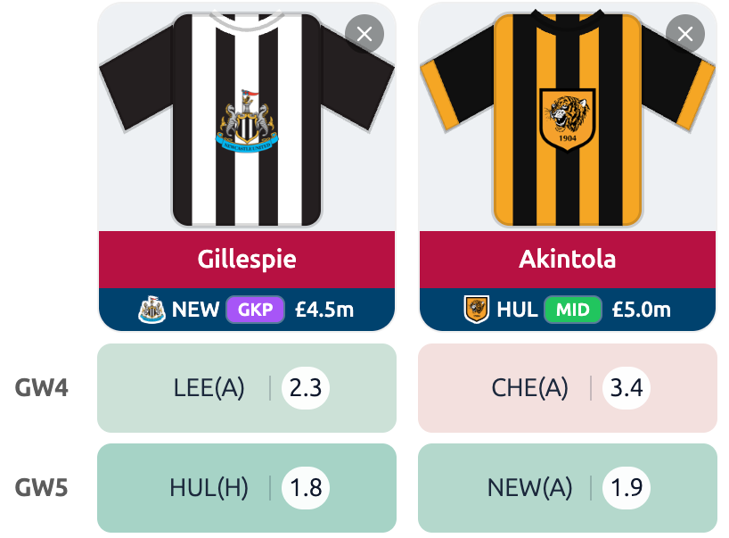

Before your next transfer, compare your options using your own FPL team.
Load your team into FPL Analytica and explore transfer choices in the Transfer Planner. See what fits your team before you decide.
Preview the signup journey. No account is created here.
Your intended next step
The approved campaign will take you to FPL Analytica’s existing signup, then back to the Transfer Planner with your own team.
This draft does not collect your details or connect to your FPL account.
Proposed launch offer · subject to leadership approvalPremium access for registered users through 20 October 2026.
Guest and Free access remain afterwards. Nobody is charged automatically.
Start with the team you have.
Transfer Planner starts with your squad, your budget and your choices.
Feature preview — still images from the product.

Transfer Planner entry screen, captured 5 September 2026. Shows how you start; a completed comparison is still needed for the demonstration.See the fixtures ahead.

A small excerpt from the fixture comparison, captured 5 September 2026. An example of the view, not current transfer advice.All premium tools in one membership, with no add-on fees.
One decision to get started.
Bring your team
Register and load your own FPL team.
Explore a transfer
Open the Transfer Planner and compare a change with an alternative.
Make your choice
Weigh up what fits your team. The final decision stays yours.
Come back before your next gameweek and revisit your options.
Preview the signup journey. No account is created here.
Your intended next step
The approved campaign will take you to FPL Analytica’s existing signup, then back to the Transfer Planner with your own team.
This draft does not collect your details or connect to your FPL account.